En chimie, les réactifs peuvent être polyfonctionnels. Plusieurs fonctions sont alors susceptibles de réagir dans les conditions de l’expérience. Le rôle du chimiste est de mettre en œuvre des stratégies permettant de favoriser la réaction affectant le groupe visé.
Molécule polyfonctionnelle
Entourer et nommer les groupes caractéristiques des molécules suivantes :
- para-aminophénol : 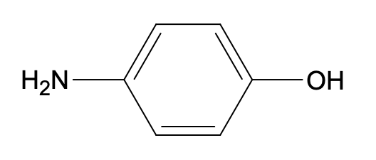
- paracétamol : 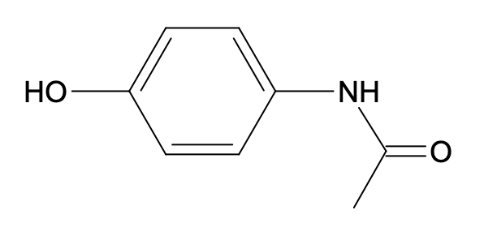
- acide salicylique : 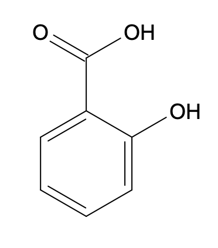
- acide acétylsalicylique : 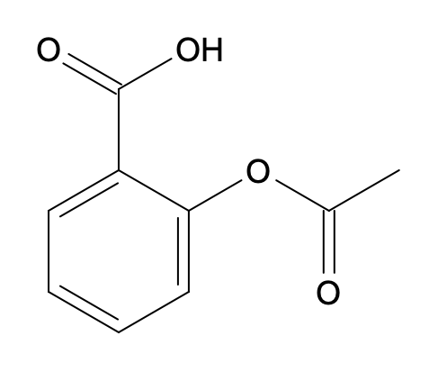
Solution
- para-aminophénol : 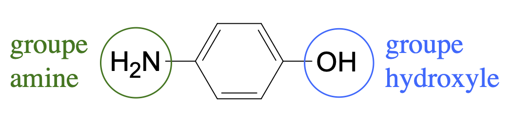
- paracétamol : 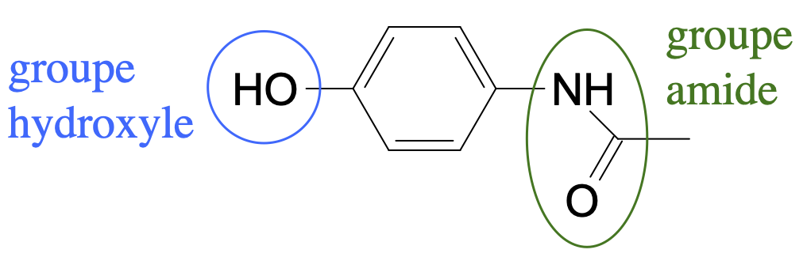
- acide salicylique : 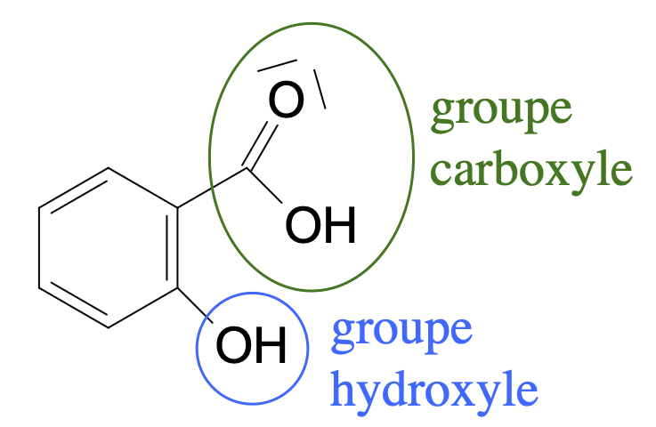
- acide acétylsalicylique : 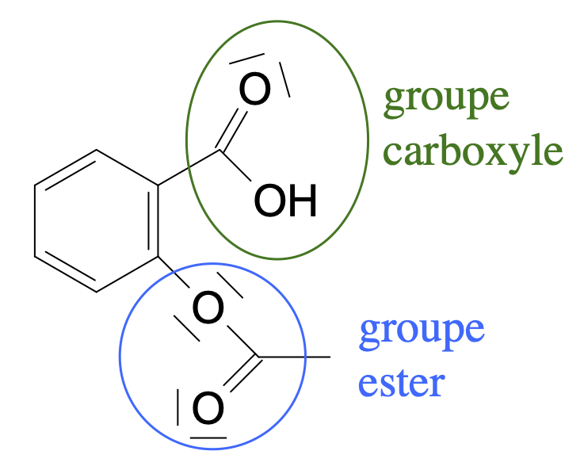
Réactifs chimiosélectifs
- Une réaction est sélective lorsque, parmi plusieurs fonctions d’une même molécule, l’une d’elles réagit préférentiellement avec le réactif considéré.
- Le réactif avec lequel la fonction réagit préférentiellement est dit chimiosélectif.
Synthèse du paracétamol
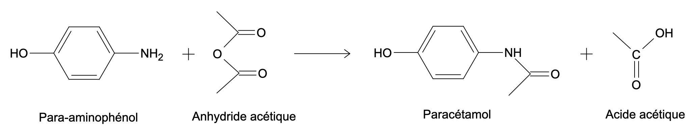L’équation de la réaction de synthèse du paracétamol s’écrit :
- Cette réaction est-elle sélective ? Justifier la réponse.
- Quel est le réactif chimiosélectif ?
Solution
- Le para-aminophénol possède deux groupes fonctionnels. Seul le groupe amine réagit (il se transforme en groupe amide), le groupe hydroxyle reste intact à l’issue de la synthèse. La réaction est sélective.
- L’anhydride éthanoïque est chimiosélectif puisqu’il ne réagit qu’avec le groupe amine.
Réaction de l’aspirine (acide acétylsalicylique) avec la soude - Première partie
Lorsqu’on fait réagir de l’aspirine avec de la soude à température ambiante, seule la fonction acide carboxylique réagit.
- Écrire l’équation de la réaction de l’aspirine avec la soude.
- Cette réaction est-elle sélective ? Si oui, quel est le réactif chimiosélectif ?
Solution
- La réaction est sélective puisque seul le groupe carboxyle réagit.
Les ions hydroxyde sont chimiosélectifs.
Réaction de l’aspirine (acide acétylsalicylique) avec la soude — Deuxième partie
Lorsqu’on fait réagir de l’aspirine chauffée à reflux avec un excès de soude, les deux fonctions réagissent.
- Écrire l’équation de la réaction de l’aspirine avec la soude sachant que le groupe ester donne le groupe hydroxyle.
- Cette réaction est-elle sélective ? Si oui, quel est le réactif chimiosélectif ?
Solution
- La réaction est n’est pas sélective puisque les deux groupes de l’aspirine réagissent.
Protection de fonctions
Groupe protecteur
Lorsqu’il n’existe pas de réaction sélective permettant de choisir laquelle des fonctions d’une molécule polyfonctionnelle faire réagir, il est nécessaire de protéger les autres fonctions afin qu’elles ne soient pas attaquées.
Annale : Réduction avec protection de fonction
On souhaite préparer la molécule $B$ à partir de la molécule $A$. On propose le schéma de synthèse suivant : 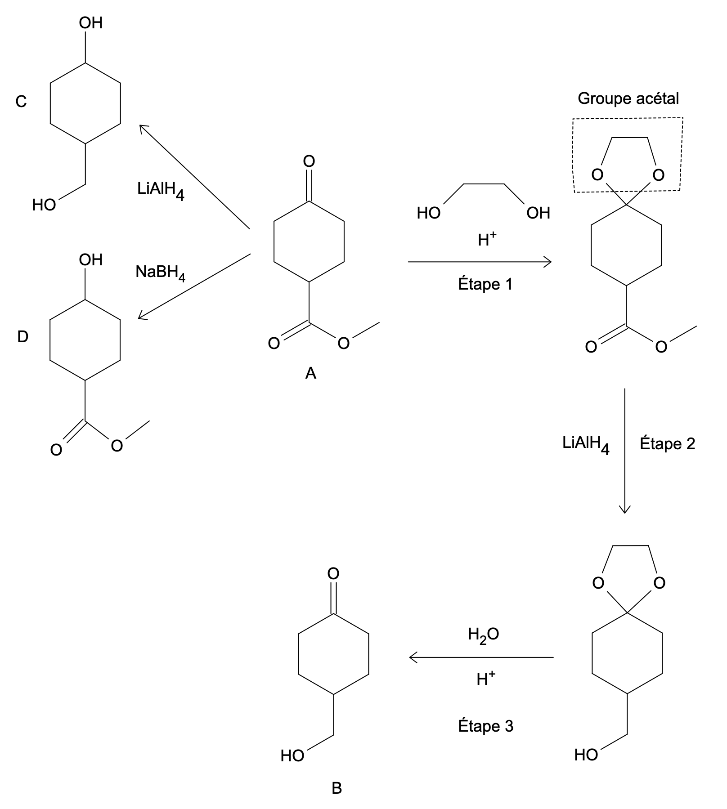
- Quels sont les groupes caractéristiques dans la molécule $A$ ?
- Même question pour la molécule $B$.
- La transformation d’une cétone $\ce{R-CO-R’}$ en alcool $\ce{R-CHOH-R’}$ est une réduction.
Justifier cette affirmation en écrivant la demi-équation électronique. - Quelle fonction de $A$ faut-il faire réagir pour former la molécule $B$ ?
- On souhaite utiliser l’hydrure métallique $\ce{LiAlH4}$ (tétrahydruroaluminate de lithium). Pourquoi dit-on que la réduction de $A$ par ce réactif est non sélective ?
- Pourquoi l’hydrure $\ce{NaBH4}$ (tétrahydruroborate de sodium) ne convient pas non plus comme réducteur ?
- À quoi sert l’étape 1 du protocole ?
- Quelle est la fonction, lors de cette synthèse, du groupe acétal ?
- À quoi servent les étapes 2 et 3 de la synthèse ?
- Il existe un autre réducteur l’hydrure de diisobutylaluminium, noté DIBAL, capable de réduire les esters en aldéhydes (en utilisant 2 moles de réactif par mole d’ester on peut même aller jusqu’aux alcools) mais pas capable de réduire les cétones.
Expliquer pourquoi il aurait été préférable de privilégier ce réaction comparativement à $\ce{LiAlH4}$. - Le DIBAL peut-il alors être qualifié de chimiosélectif pour cette réaction ?
Solution
- $A$ : 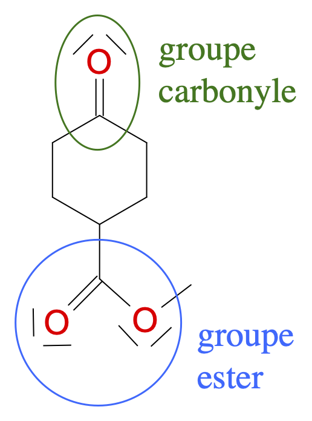
- $B$ : 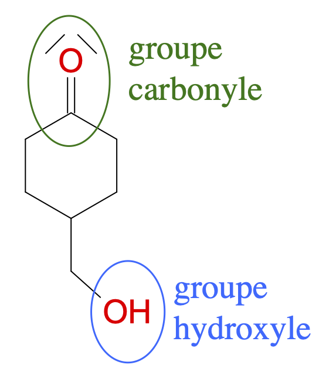
- $\ce{R-CO-R’}/\ce{R-CHOH-R’}$ : $\ce{2H^+ + R-CO-R’ + 2e^- = R-CHOH-R’}$
- $A$ et $B$ partagent le groupe carbonyle. Le groupe ester de $A$ doit être transformé en groupe hydroxyle pour former $B$.
- L’utilisation de $\ce{LiAlH4}$ à partir de $A$ conduit à $C$. On voit que $C$ ne possède ni le groupe carbonyle ni le groupe ester de $A$ ; ces deux groupes ont donc réagi. La réaction n’est pas sélective.
$\ce{LiAlH4}$ est un réactif non chimiosélectif. - $\ce{NaBH4}$ est un réactif chimiosélectif mais il attaque la mauvaise fonction – la fonction cétone – et laisse la fonction ester intacte, ce qui n’est pas ce que l’on souhaite.
- L’étape 1 est l’étape de protection. On fait réagir le groupe carbonyle afin d’obtenir un nouveau groupe qui ne réagira pas par la suite (sauf lors de l’étape de déprotection bien sûr).
- Le groupe acétal est le groupe protecteur. Il ne doit pas réagir avec le réactif non chimiosélectif (lors de l’étape 2).
- Lors de l’étape 2, on réalise la réaction chimique souhaitée : l’attaque de la fonction ester.
L’étape 3 est l’étape de déprotection : on fait réagir le groupe protecteur afin de retrouver le groupe carbonyle initial. - L’utilisation du DIBAL aurait beaucoup simplifié la synthèse : une seule étape aurait remplacé les 3 étapes. Les quantités de matière mises en jeu auraient donc été moins importantes.
Le processus aurait donc été plus simple, plus rapide, moins onéreux. - Le DIBAL est un réactif chimiosélectif pour la synthèse envisagée.
Le groupe protecteur utilisé doit :
- Réagir de manière sélective avec la fonction à protéger ;
- Ne pas réagir lors des réactions suivantes ;
- Pouvoir être retiré facilement et sélectivement, une fois la réaction souhaitée achevée.
Annale : Synthèse peptidique
La Met-enképhaline (aussi appelée Tyr-Gly-Gly-Phe-Met) est un petit polypeptide, c’est-à-dire une molécule construite à partir de cinq acides α-aminés. Elle appartient à la famille des enképhalines, molécules ayant une action au niveau des neurones nociceptifs. Ces neurones interviennent dans le mécanisme de déclenchement de la douleur ; la capacité des enképhalines à inhiber ces neurones, c’est-à-dire à diminuer leur activité, leur confère une activité analgésique.
Le but de cet exercice est de montrer la complexité de la synthèse d’un polypeptide, même court, et de mettre en place une stratégie pour la dernière étape de la synthèse de la Met-enképhaline.
Document 1 — Exemples d’acides α-aminés présents dans l’organisme
Document 2 - Exemple de séquence de protection/déprotection d’une fonction amine
La déprotection qui permet de retrouver la fonction amine est assurée par la décomposition du produit obtenu en milieu acide à 25°C.
Document 3 - Exemple de séquence de protection/déprotection d’une fonction acide carboxylique
Cette réaction est équilibrée. Afin d’obtenir un bon rendement, et pour que la transformation puisse être considérée comme totale, il est nécessaire d’éliminer l’eau au fur et à mesure de sa formation, par exemple à l’aide d’un montage de Dean-Stark.
La déprotection de la fonction est assurée par la réaction inverse, appelée hydrolyse, à l’aide d’un catalyseur acide. Celle-ci est également équilibrée, et on utilise un grand excès d’eau afin de la réaliser avec un bon rendement.
Mise en évidence de la difficulté de la synthèse peptidique
- À quoi reconnaît-on que les molécules du document 1 sont bien des acides aminés ?
Solution
Les molécules sont des acides aminés car elles comportent les groupes carboxyle et amine. Ce sont des acides $\alpha$-aminés lorsque le groupe amine est porté par le carbone voisin du carbone du groupe carboxyle.
- Identifier les 4 acides α-aminés différents nécessaires à la synthèse de la Met-enképhaline.
Solution
La tyrosine, la glycine, la phénylalanine et la méthionine sont nécessaires à la synthèse de la met-enképhaline.
- Compléter l’équation de réaction ci-dessous entre un acide carboxylique et une amine. Entourer et nommer le nouveau groupe fonctionnel.
Solution
On fabrique une amide.- En déduire s’il est possible d’obtenir un seul dipeptide en faisant réagir deux acides α-aminés différents ensembles sans précaution particulière. Justifier simplement.
Solution
Chaque acide α-aminé ($A$ et $B$ par exemple) possède deux groupes caractéristiques (carboxyle et amine). Lorsqu’on les fait réagir, on peut donc obtenir quatre dipeptides différents : $\ce{A-B}$, $\ce{B-A}$, $\ce{A-A}$ et $\ce{B-B}$.
Dernière étape de synthèse de la Met-enképhaline
On envisage la dernière étape de la synthèse de la Met-enképhaline à partir des deux réactifs suivants :
-
Réactif $A$ : que l’on notera :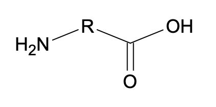
-
Réactif $B$ : 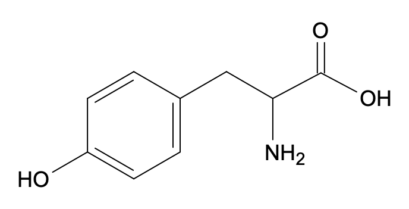 que l’on notera :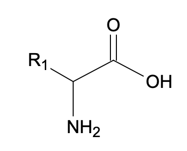
- Il est possible d’obtenir 4 polypeptides à partir de ces deux réactifs. Les formules topologiques de deux d’entre eux sont données ci-dessous (la première est la Met-enképhaline). Donner celles des deux autres.
Solution
Les deux molécules données dans l'énoncé sont $\ce{B-A}$ et $\ce{B-B}$.
- Déduire de la question précédente quelle fonction de chacun des réactifs $A$ et $B$ doit être protégée afin d’obtenir uniquement la Met-enképhaline.
Solution
Il faut protéger le groupe carboxyle de la molécule $A$ et le groupe amine de la molécule $B$.
- À l’aide des documents, compléter la suite de transformations chimiques à mettre en place afin de réaliser la dernière étape de la synthèse de la Met-enképhaline :
- A. Protection du réactif $B$ :
Solution
- B. Protection du réactif $A$ :
Solution
- C. Réaction entre le réactif $A$ protégé et le réactif $B$ protégé :
Solution
- D. Déprotection de la fonction amine :
Solution
- E. Déprotection de la fonction acide carboxylique :
Solution
La synthèse d’un dipeptide (ou d’un polypeptide) nécessite d’utiliser des groupes protecteurs et des groupes activants.Synthèse éco-responsable
Pour être éco-responsable, une synthèse doit :
-
Économiser les atomes, c’est à dire maximiser leur présence dans le produit de la synthèse (par opposition aux auxtres produits, qui ne constituent pas l’objet premier de la synthèse) ;
-
Favoriser l’utilisation de catalyseurs afin de diminuer la consommation d’énergie, d’augmenter la sélectivité des réactions et de diminuer les quantités de réactifs ;
-
Favoriser les réactifs les moins toxiques possibles pour l’environnement ;
-
Utiliser des solvants verts, c’est à dire faiblement toxiques pour l’environnement, facilement récupérables et recyclables. Ils doivent cependant permettre de maintenir les caractéristiques de la réaction, telles que les vitesses de réaction et les rendements.